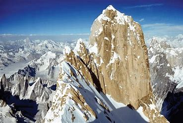
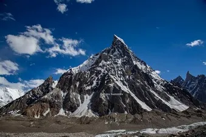

The Saltoro Mountains are a subrange of the Karakoram Range. They are located in the heart of the Karakoram, on the southwest side of the Siachen Glacier, one of the two longest glaciers outside of the polar regions. The name given to this range is shared with the Saltoro Valley which is located west of this range on the Pakistan side of the Line of Actual Control. They are claimed as part of Jammu and Kashmir by India and as part of Gilgit–Baltistan by Pakistan. In 1984, India assumed military control of the main peaks and passes of the range, with Pakistani forces pushed into the glacial valleys just to the west. Hence, despite high peaks and dramatic climbing opportunities, they are little visited except by military forces due to the ongoing Siachen Conflict. On the southwest side, the Saltoro Mountains drop steeply to the valleys of the Kondus and Dansam Rivers, which join to form the Saltoro River, a tributary of the Shyok River. River. To the northwest, the Kondus Glacier separates the range from the neighboring Masherbrum Mountains, while on the southeast, the Gyong River, Glacier, and Pass (Gyong La) separate the northern Saltoro Mountains from the southern Saltoro Mountains or "Kailas Mountains" .
Saltoro Mountains

| Saltoro Mountains | |
|---|---|
|  | |
| Highest Peak | |
| Peak | Saltoro Kangri |
| Length | 80 km (50 mi) |
| Elevation | 7,742 m (25,400 ft) |
| Coordinates | 35°24′01″N 76°50′55″E |
| Geography | |
| Location | Actual Ground Position Line, on theborder between Indian and Pakistani controlled territories |
| Borders On | Masherbrum Mountains |